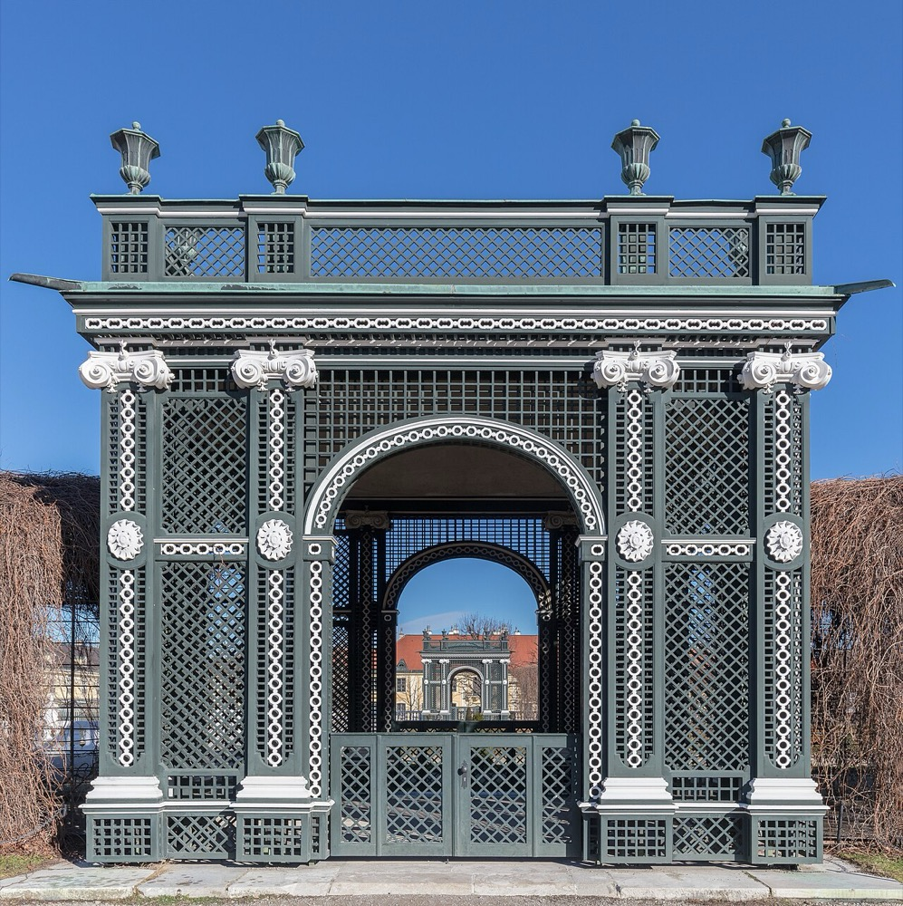

Австрия

Австрия идет как хорошая вещь из антикварной лавки: аккуратно, с историей и без единой лишней детали. Вена закрывает всё разом: Шёнбрунн с садами, кофейни из списка ЮНЕСКО, где официант запоминает ваш кофе с первого раза, и вальс, который здесь не достопримечательность, а воздух. Хофбург и Стефансдом отрабатывают историю, а вечером заказывайте штрудель тёплым, с ванильным соусом, и сидите на террасе, где играют живьём. Второй слой — Зальцбург: родина Моцарта, крепость над рекой и улицы, которые «Звуки музыки» сделали знаменитыми. Третий — альпийская глубинка: деревни с молоком «прямо из-под коровы», озёра Зальцкаммергута и Хальштат на отвесном склоне, где деревянные дома в три ряда смотрят на воду. S-Bahn довезёт до аутентичных пригородов за карманные деньги. Вена идеально идёт под позднюю осень: когда в других столицах уже скучно, здесь начинается сезон кофеен. Страна маленькая, но плотная — как хороший штрудель.
Что знать перед поездкой
- Штрудель заказывайте тёплым с ванильным соусом
- S-Bahn довезёт до аутентичных пригородов
- Вена идеально идёт под позднюю осень